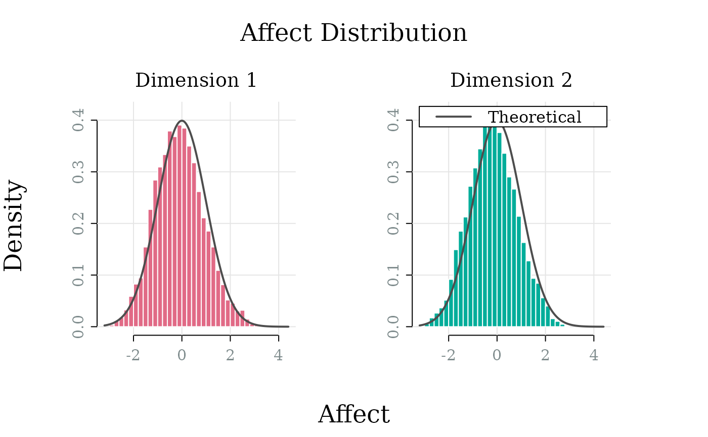
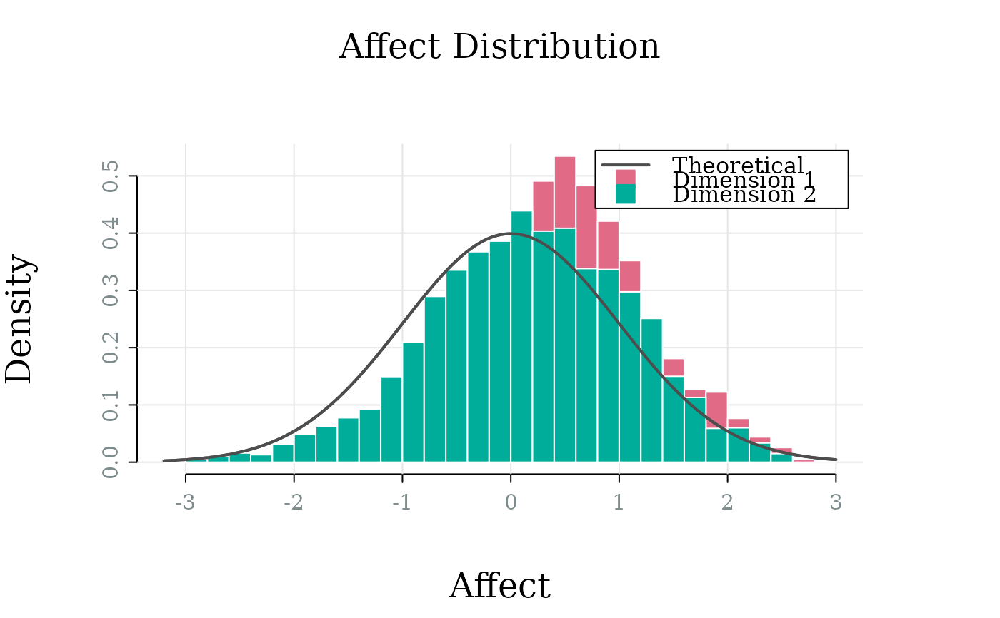
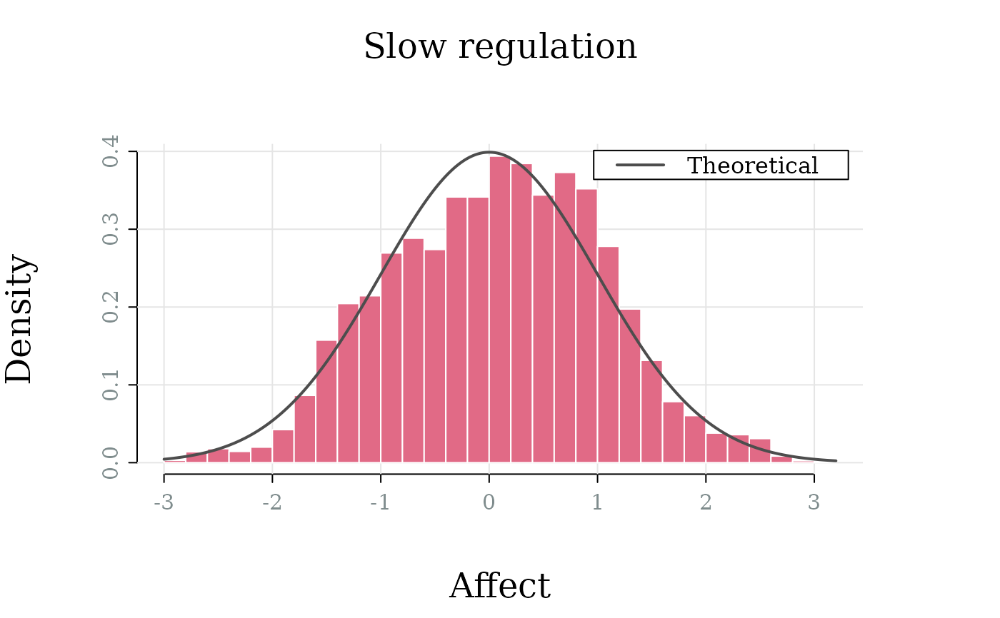
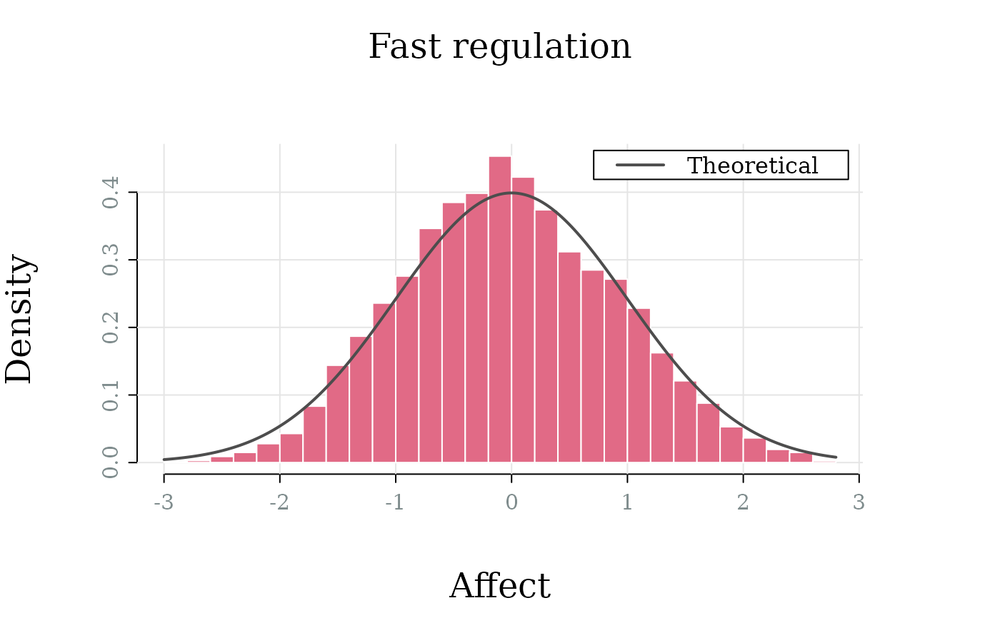

Visualise the distribution of affect values from an OU affect simulation using histograms for each dimension. In case of multiple simulations, the histograms aggregate data across all simulations for each dimension.
Usage
ou_plot_histogram(
x,
which_dim = NULL,
which_sim = NULL,
by_dim = TRUE,
palette = "Temps",
col_theory = "grey30",
alpha = 1,
share_xaxis = TRUE,
share_yaxis = !freq,
freq = FALSE,
breaks = 30,
main = "Affect Distribution",
sub = paste("Dimension", if (is.null(which_dim)) {
seq.int(x[["model"]][["ndim"]])
} else {
which_dim
}),
xlab = "Affect",
ylab = ifelse(freq, "Frequency", "Density"),
legend_position = "topright",
...
)Arguments
- x
A
simulate_affectOUmodel object produced bysimulate.affectOU()- which_dim
Dimension indices to plot (NULL for all)
- which_sim
Simulation indices to plot (NULL for all)
- by_dim
Logical; plot each dimension in separate panel?
- palette
Color palette. Should be one
grDevices::hcl.pals().- col_theory
Color for theoretical distribution line (if stationary)
- alpha
Alpha transparency for colors (0 = transparent, 1 = opaque)
Logical; use same x-axis limits for all panels?
Logical; use same y-axis limits for all panels?
- freq
Logical; plot frequency instead of density?
- breaks
Number of histogram breaks
- main
Main title
- sub
Subtitle for panels
- xlab
X-axis label
- ylab
Y-axis label
- legend_position
Position of legend (one of
"bottomright","bottom","bottomleft","left","topleft","top","topright","right","center")- ...
Additional graphical parameters
Stationary Distribution
When the system is stable (\(\theta > 0\)), the stationary distribution is normal with mean \(\mu\) and variance \(\gamma^2 / (2\theta)\). The theoretical density curve is overlaid on the histogram when the system is stationary.
Different parameter combinations can yield the same stationary variance but produce different dynamics. For example, doubling both \(\theta\) and \(\gamma\) keeps the stationary SD constant but changes the half-life.
Examples
model <- affectOU(ndim = 2)
sim <- simulate(model, nsim = 3)
ou_plot_histogram(sim)

# Plot dimensions in one panel
sim <- simulate(model, nsim = 1)
ou_plot_histogram(sim, by_dim = FALSE)

# Same stationary SD, different dynamics
m1 <- affectOU(theta = 0.5, mu = 0, gamma = 1) # SD = 1, half-life = 1.4
m2 <- affectOU(theta = 2.0, mu = 0, gamma = 2) # SD = 1, half-life = 0.35
s1 <- simulate(m1, stop = 100)
s2 <- simulate(m2, stop = 100)
ou_plot_histogram(s1, main = "Slow regulation")

ou_plot_histogram(s2, main = "Fast regulation")
